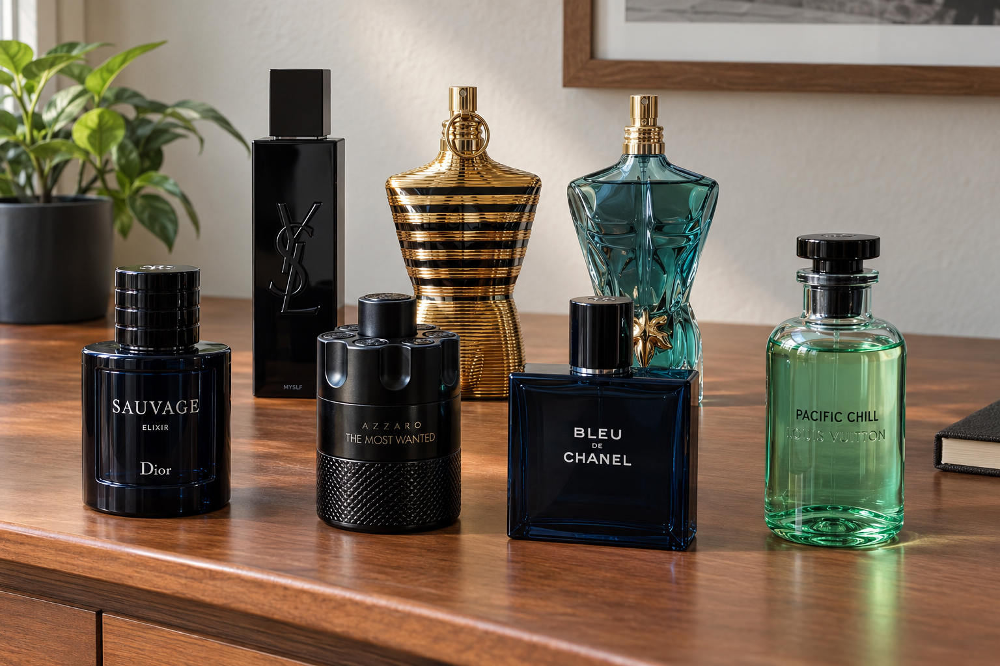
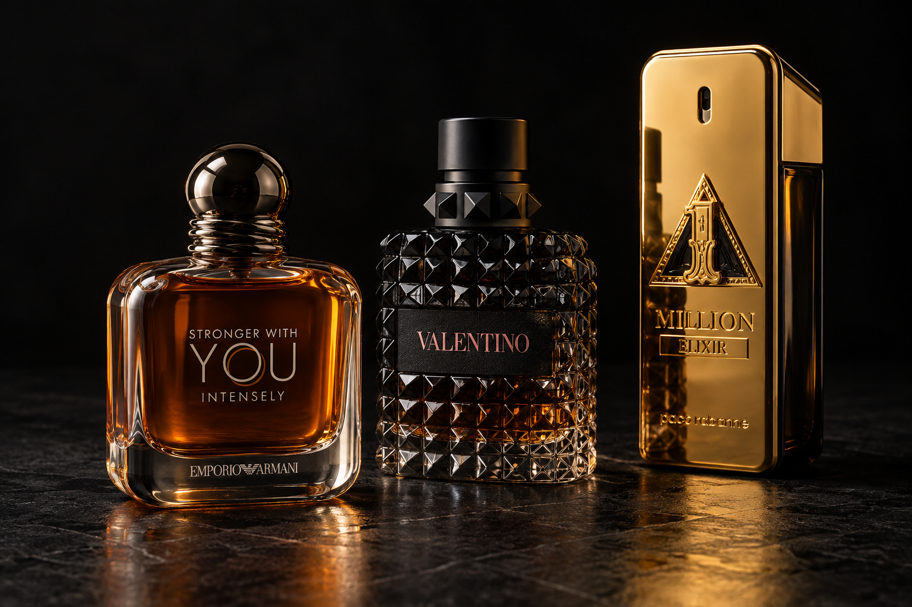
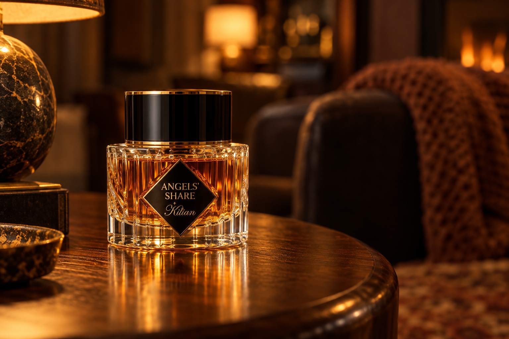
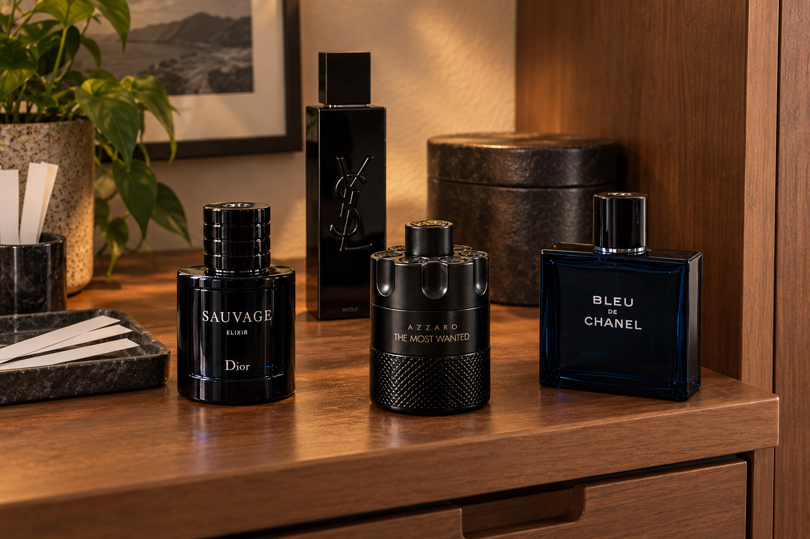
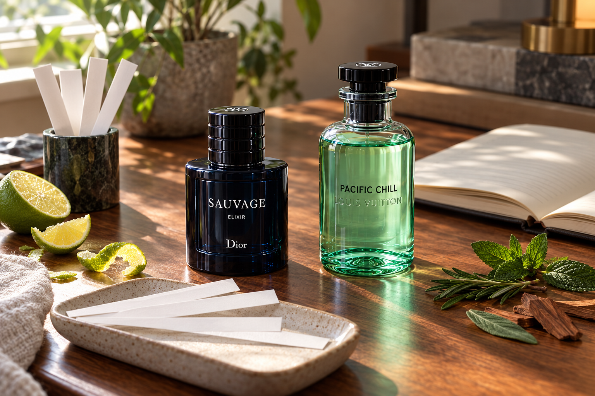
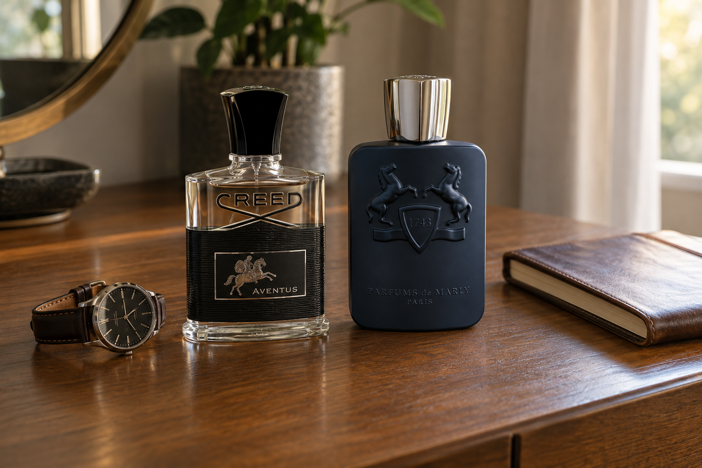
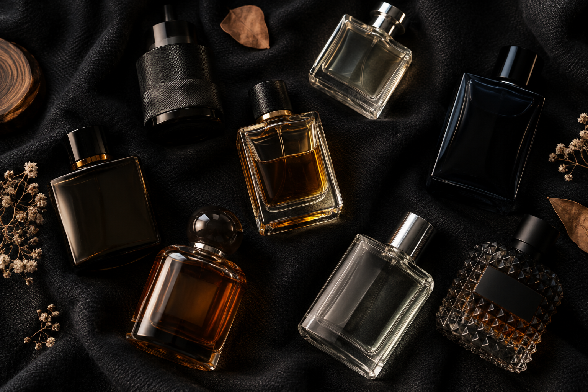

What
Fragrance collecting is about trying different scents and finding ones I enjoy wearing. I like having a few different options instead of wearing the same thing every day.
My collection is around 31 bottles now. Fragrances come in lots of scent styles, and I usually prefer woody and fresh ones.
- Fresh
- Woody
- Citrus
- Aquatic
- Spicy
- Sweet

Image prompt: Create a realistic personal fragrance collection on a warm home dresser using the bottle styles from my collection.
Who
My sister gifted me Dior Sauvage Elixir for my 17th birthday. I was impressed by how good it smelled, and it made me curious about other fragrances.
After that, I started watching fragrance reviews and unboxings on YouTube and TikTok. Seeing people talk about different scents got me more interested in collecting.
When I was newer to the hobby, I bought into the hype around some sweet fragrances. I still own a few, but they are not really my favorite. That taught me to pay more attention to my own taste.

Image prompt: Arrange Stronger With You Intensely, Valentino, and 1 Million Elixir against a black background with dramatic lighting and subtle reflections.
When
I match what I wear to the situation. For the gym, I usually prefer fresh scents like Louis Vuitton Pacific Chill or Jean Paul Gaultier Le Beau. At school, I keep it lighter with something like Bleu de Chanel.
Parties and special occasions are when I enjoy fragrances most. My choice depends on the weather and the vibe, so I do not have one bottle for every occasion.
| Situation | What I Usually Prefer |
|---|---|
| Gym | Fresh and clean |
| School | Light and easy to wear |
| Parties | Something stronger, depending on the mood |
| Hot weather | Fresh or aquatic |
| Cold weather | Woody or spicy |

Image prompt: Place Angel's Share by Kilian on a wooden side table with warm amber lighting and a cozy evening background.
Where
Department stores and places like Sephora give people a chance to explore scents in person. Sample sets are another way to try a few fragrances at home without getting a full bottle.
The setting matters when wearing a fragrance, too. A casual outdoor hangout gives a scent more room than a small indoor space. In close spaces or formal settings, keeping it subtle makes sense.
A cool, dark spot at home is a good place to keep bottles. Direct sunlight, heat, and a steamy bathroom are things to avoid when choosing a storage spot.

Image prompt: Create a personal fragrance storage and testing setup with bottles and scent strips on a shaded shelf.
How
To test a fragrance, spray a little on skin and give it time before deciding. The first smell can change as it dries down, so that first spray does not tell the whole story.
I usually keep it to about 1 to 3 sprays for school. A small amount on the wrists or neck is a simple starting point, and the number of sprays should depend on how strong the scent is and how close other people will be.
- Top Notes: The first scents you notice right after spraying. They usually fade the fastest.
- Middle Notes: The scents that become clearer as the opening fades.
- Base Notes: The longer-lasting scents that stay through the dry-down.

Image prompt: Create a realistic fragrance testing setup with scent strips, a notebook, citrus peel, leaves, and cedar pieces.
Why
Smelling good gives me confidence and feels like part of my personal style. Choosing a fragrance is a small thing, but I enjoy that part of getting ready.
I also like collecting the bottles and having different scents for different seasons. Scents can bring back memories, which makes the hobby feel more personal than just owning a collection.
Yves Saint Laurent and Christian Dior are two of my favorite fragrance houses. Still, I care more about how something smells than the label. I am not collecting just to flex a brand.

Image prompt: Create a high-quality realistic photograph of Creed Aventus and Parfums de Marly Layton on a clean wooden dresser beside a watch and worn notebook. Use soft window lighting, realistic reflections, and a calm, personal mood that suggests confidence, style, and memories. Keep the composition object-only, with no people, body parts, human reflections, clutter, extra perfume bottles, collage, text overlays, or luxury-ad styling.
AI Prompts
AI was used as a support tool during this project for planning, writing, and visual ideas. It helped me organize the required sections, create a checklist based on the assignment requirements, and improve some of my writing while keeping my original meaning.
I also used AI to compare color ideas before choosing the dark charcoal, gold, and cream theme used throughout the website. For the fragrance images, I provided reference pictures and described the lighting, background, bottle style, and overall look I wanted before choosing the final versions.
- Brainstorming: Helped organize the sections and build a checklist for the assignment.
- Writing: Helped fix grammar and make some of my casual writing clearer.
- Design: Helped compare color combinations and visual ideas.
- Images: Helped develop image prompts from fragrance references and generate the final visual scenes.
For the image workflow, I used generative AI to develop and create the fragrance scenes based on the references and visual direction I provided.
The specific image prompt used for each picture is shown underneath its figure.

Image prompt: Create a photorealistic top-down fragrance flat-lay on a dark textured background with several different bottles, soft cinematic lighting, and a clean personal collection aesthetic.